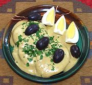

|
Ocopa Sauce with PotatoesPeru - Ocopa | ||||
| Serves: Effort: Sched: DoAhead: |
8 app *** 1 hr Most |
In Peru, this famous dish from Arequipa is called an "appetizer", but I think of it more as a light lunch served with beer. Just the word "Ocopa" presumes Ocopa Sauce served over Potatoes with the three standard garnishes. | |||
|
2 4 1-1/2 ------- 5 2 7 2 2 3 1 1/3 1/4 12 ------- a/r 2 ------- |
# lrg oz ----- oz cl oz T T T oz t t oz --- T --- |
Potatoes (1) Eggs Peanuts raw (2) -- Sauce Onion Garlic Queso Fresco (3) Olive Oil Aji Amarillo Paste (4) Huacatay Paste (5) The Roasted Peanuts Crackers (6) Salt Pepper Evaporated Milk (7) -- Garnish The Boiled Eggs Olives, Black (8) Parsley, flat ------------ |
The three standard garnishes are so standard I've not seen a photo that didn't include them, so don't leave them out. This recipe makes 2-1/2 cups of the sauce. See also Serving. Do-Ahead
|